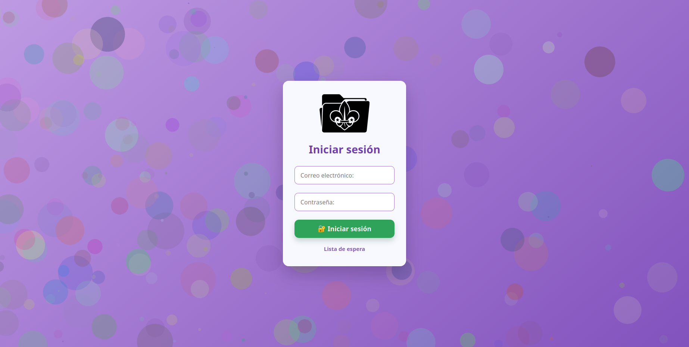
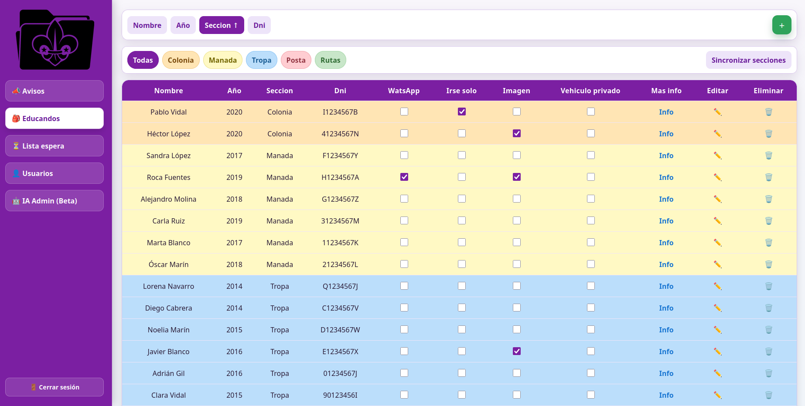
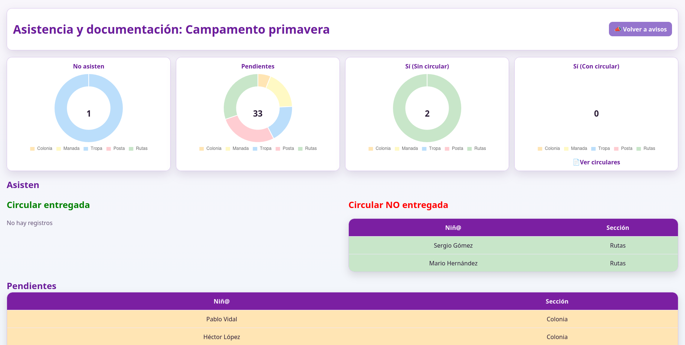
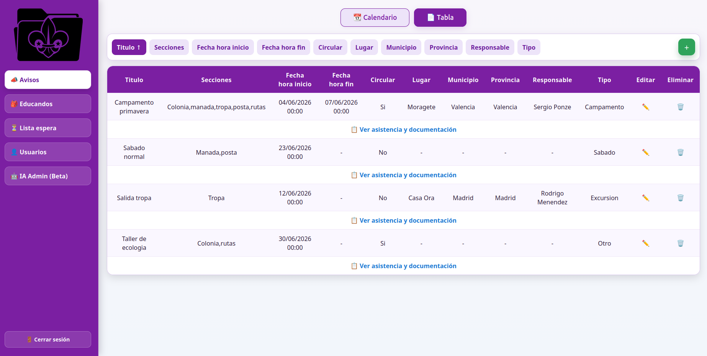
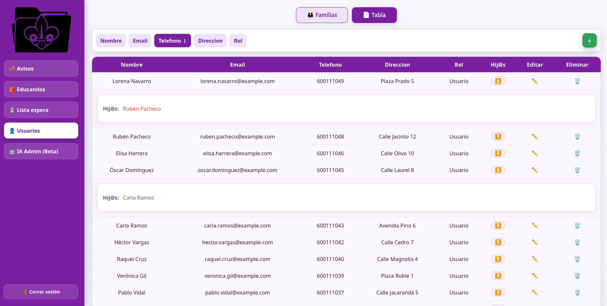
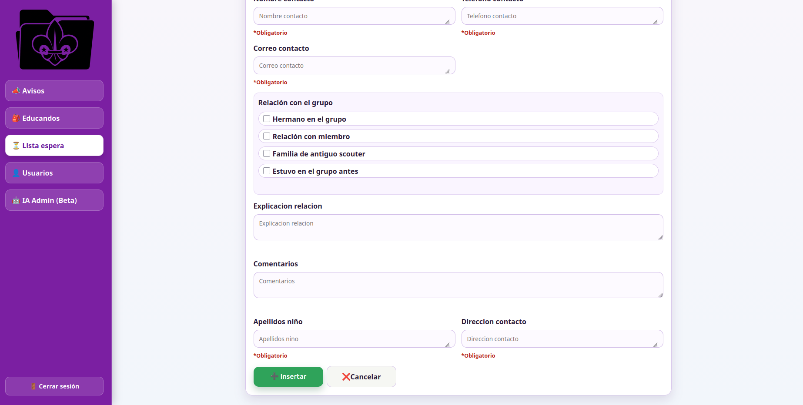
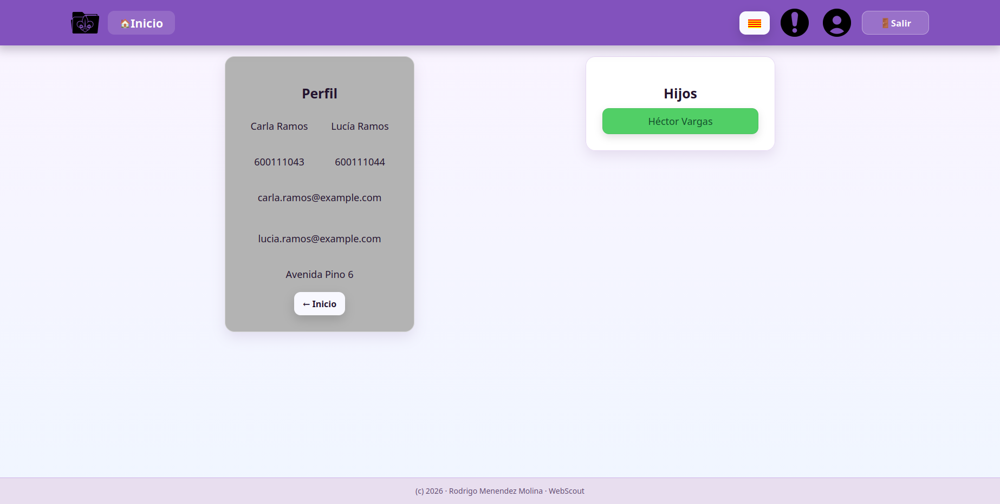
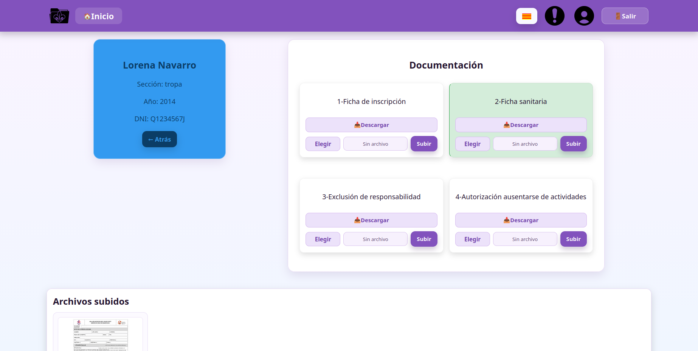
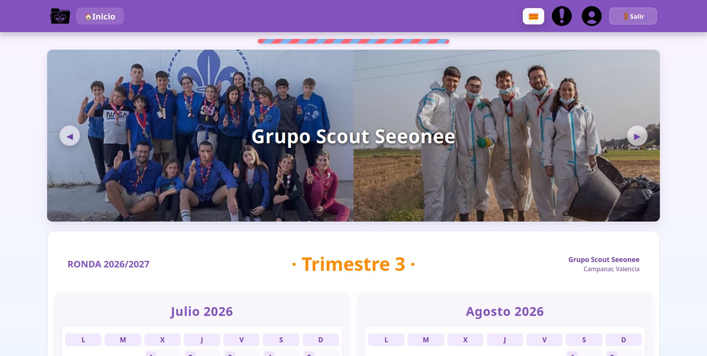

Descripción
Web de gestion de documentacion de un grupo scout. Se pueden descargar y rellenar circulares a a partir de infromacion dinamica y editable. Tiene parte de cliente par aver la informacion y decargar, rellenar y subir circulares, asi como ver las ya subidas. Y tiene parte de administrador para ver toda la informacion en tablas, galeria de circulares, decarga masiva de documentacion y creacion y administracion de usuarios.
Galería









Tecnologías usadas
- HTML5
- CSS3
- JavaScript
- MySQL
- PHP